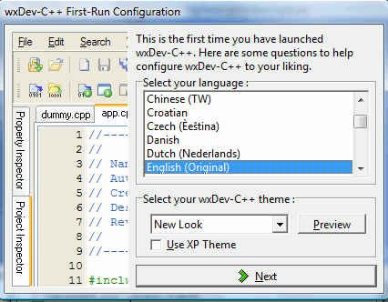

When you launch Dev-C++ for the first time, you will see the following
dialog :

You can select the language wxDev-C++ will use, as well as the icon
theme.
To add a XP flavor to wxDev-C++, check the ‘Use XP Theme’ box.
If
you installed wxDev-C++ with the included Mingw compiler
system,
then all
MingW compiler paths will be set to their
correct values. If
you have previously installed versions of Cygwin, MSYS, or MingW, they
might interfere with wxDev-C++. Although they can be used, you'll have
to set up the compiler paths and settings manually in the Tools
menu under Compiler Options.
If
you also have the MS Visual Studio compiler installed, wxDev-C++ will
attempt to detect it and add the relevant paths as well.